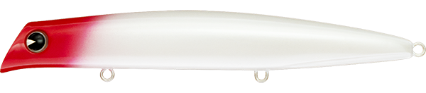
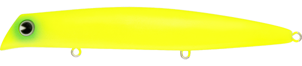
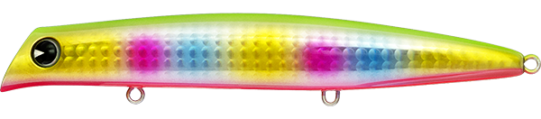
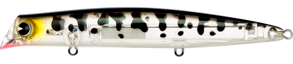

コモモSF-125
（komomo SF-125）
コモモSF-125（komomo SF-125）はima（アイマ）のシャローランナーです。
「投げて巻くだけで釣れるリップレスミノー」として1998年に登場した、シャローランナーの先駆け的な名作。2度のフルモデルチェンジを経た現行モデルは、MRDシステムと新構造のヘッドで「シャロー性能」と「遠投性能」を両立し、水面下5〜50cmのシーバスの捕食レンジを自在に攻められます。

画像出典:ima公式HP
スペック
- メーカー
- ima（アイマ）
- タイプ
- フローティング（シャローランナー）
- 全長
- 125mm
- 自重
- 18g
- レンジ
- 5〜50cm
- フック
- #4
- リング
- #3
- アクション
- ウォブンロール
- ターゲット
- シーバス
- 価格
- 2,640円（税込）
- 発売
- 1998年6月
▼今すぐチェック
コモモSF-125の特徴
「投げて巻くだけ」で釣れる、シャローランナーの元祖にして定番
-
超低速巻きでも破綻しないなめらかなアクション
デッドスローでもしっかり水を噛んでウォブンロールを出し続ける。潮の動きが弱い場面や、ゆっくり見せて食わせたい場面でも違和感なくアピールできるのが、長く定番であり続ける理由。
-
MRDシステムで安定した飛距離と抜群の動き出し
imaの重心移動システム「MRD」を搭載し、飛行姿勢が安定してよく飛ぶ。重心は着水後すぐに戻るため、着水直後からアクションが立ち上がり、ウェイトを戻す動作で魚を散らす心配もない。
-
水面下5〜50cmを自在にレンジコントロール
ロッドの角度や巻き速度でレンジを調整でき、水面直下から50cm前後までのシーバスの捕食レンジを1本で探れる。レンジキープ力が高く、ロッドワークに素直に反応する。
コモモSF-125の使い方
基本はスローのただ巻き。表層の一枚下を、ヨタヨタとしたローリングで引いてくるのがコモモらしい使い方です。まずはただ巻きで水面直下を通し、シーバスが浮いているかを確認します。
レンジはロッドの高さで調整するのがポイント。ロッドを立てれば水面直下、ロッドを寝かせれば一段下のレンジを引けます。反応はあるのに食わないときは、小さなトゥイッチで変化をつけると食わせの間を作りやすくなります。
コモモSF-125の得意な状況
干潟・河口・河川・サーフなど、シャローエリア全般が出番。
特に干潮時や潮位の低いタイミング、シャローフラット、河川のよどみ、サーフの流れのヨレなど、表層〜浅いレンジを狙いたい状況で威力を発揮します。流れの弱い場所でもしっかり泳ぐので、「流れが効かないから巻き物が使いにくい」という場面でも頼りになる1本です。
ワンポイント
流れが弱い場所ほど、あえてスローに巻いて「見せて食わせる」のがコツです。風や波で水面がざわついている場面では、リトリーブ速度を少しだけ上げるとアクションが安定します。
潮が動き始めるタイミングや、ベイトが表層に差してきた瞬間が特に狙い目。まずコモモSF-125で上のレンジから探る、というローテーションの1本目にすると組み立てやすくなります。
コモモSFシリーズの使い分け
| モデル | 全長／自重 | 得意な場面 |
|---|---|---|
| SF-85 | 85mm／7g | レンジ5〜30cm。港湾・河川の小型ベイトパターン |
| SF-95 slim | 95mm／5.7g | レンジ15〜30cm。細身シルエットでハク・小型ベイトに |
| SF-110 | 110mm／12g | レンジ0〜50cm。港湾・河川で扱いやすい中間サイズ |
| SF-125 | 125mm／18g | レンジ5〜50cm。干潟・河口・サーフまでこなすシリーズの基準（本記事のモデル） |
| SF-145 | 145mm／26g | レンジ20〜50cm。サーフ・磯の遠投や大型ベイトパターン |
| SF-155 | 155mm／25g | レンジ5〜50cm。河川・干潟のビッグベイト（コノシロ・落ち鮎など）パターン |
コモモSFシリーズは85〜155mmまでサイズ展開があり、ベイトの大きさとフィールドに合わせて選べます。125はその中でも「干潟から河口・サーフまで使える基準サイズ」で、迷ったらまずこれ、という1本です。一枚下のレンジをナチュラルに引きたいときは、同じ125mmのコモモ125カウンターへの持ち替えがオススメです。
人気カラー
コモモSF-125は通常カラー16色に加え、特別企画カラーも展開。シャローのシーバス狙いでオススメのカラーを厳選して紹介します。

レッドヘッドパールナイトゲームでもシルエットを出しやすい、定番のレッドヘッド系。

マットチャート濁り潮やナイトゲームで定番の高アピールカラー。

玉彩imaを代表するカラー。アピールが強く視認性も良い、釣れるカラーの代名詞。

コーチドッグクリア定番化しつつあるクリア系。ベイトサイズが合っていない場面でも違和感を与えにくい。
画像出典:ima公式HP
コモモSF-125に似ているルアー
-
 カゲロウ124F
メガバス
詳細はこちら＞
カゲロウ124F
メガバス
詳細はこちら＞
全長124mm・自重22gのシャローランナー。レンジ0〜20cmとコモモSF-125よりさらに表層寄りで、重心移動システムLBOⅡによる飛距離が強み。水面直下をより浅く引きたいときの持ち替えに。
-
 アイザー125F
ブルーブルー
詳細はこちら＞
アイザー125F
ブルーブルー
詳細はこちら＞
全長125mm・自重22gのフローティングミノー。同じ125mmクラスでレンジ5〜30cmと、コモモSF-125と同じシャロー帯を狙える。干潟・河口のシーバスゲームで選択肢が重なる1本。
-
 モニカ125F ジェットブースト
シマノ
詳細はこちら＞
モニカ125F ジェットブースト
シマノ
詳細はこちら＞
全長125mm・自重22gのシャローランナー。レンジは水面直下〜30cmで、ジェットブーストによる飛距離が持ち味。広いシャローを遠投で探りたいときにコモモSF-125と使い分けやすい。